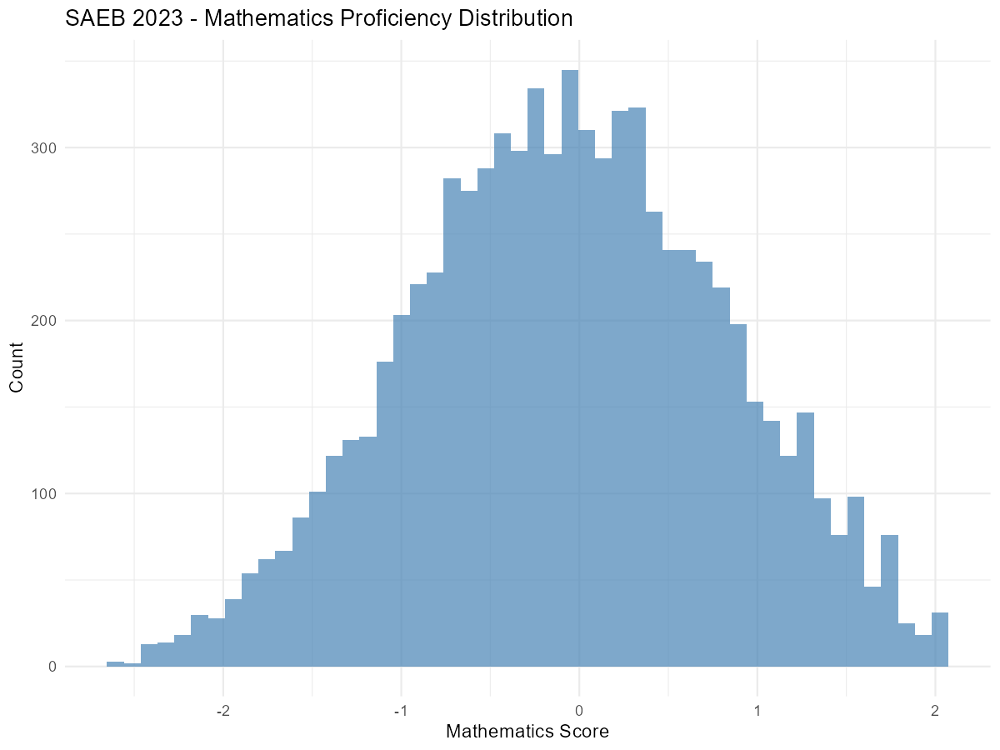
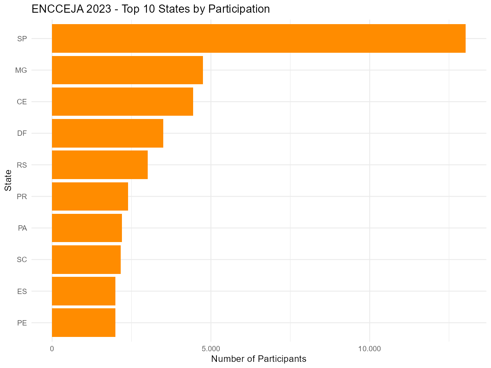
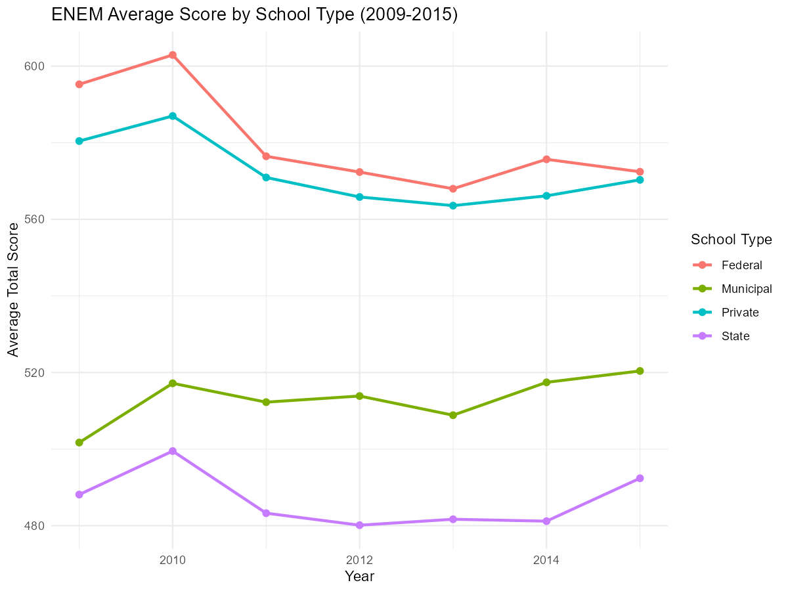

Basic Education Assessments: SAEB, ENCCEJA, and ENEM by School
Source:vignettes/basic-education-assessments.Rmd
basic-education-assessments.RmdThis vignette covers three basic education assessment datasets
available in educabR. For IDEB, ENEM, and the School Census, see
vignette("getting-started").
SAEB - Basic Education Assessment System
SAEB (Sistema de Avaliacao da Educacao Basica) is a biennial assessment that measures student performance in Portuguese and Mathematics across Brazilian basic education. It is one of the components used to calculate IDEB.
Available data types
SAEB microdata includes four perspectives:
| Type | Description |
|---|---|
"aluno" |
Student-level results (scores, responses) |
"escola" |
School questionnaire data |
"diretor" |
Principal questionnaire data |
"professor" |
Teacher questionnaire data |
Example analysis: Score distribution
# Explore student scores
saeb_sample <- get_saeb(2023, type = "aluno", n_max = 10000)
# Score distribution by subject
saeb_sample |>
filter(!is.na(proficiencia_mt)) |>
ggplot(aes(x = proficiencia_mt)) +
geom_histogram(bins = 50, fill = "steelblue", alpha = 0.7) +
labs(
title = "SAEB 2023 - Mathematics Proficiency Distribution",
x = "Mathematics Score",
y = "Count"
) +
theme_minimal()
ENCCEJA - Youth and Adult Education Certification
ENCCEJA (Exame Nacional para Certificacao de Competencias de Jovens e Adultos) provides certification for elementary and high school equivalency. It covers four knowledge areas: Natural Sciences, Mathematics, Portuguese, and Social Sciences.
Downloading ENCCEJA data
# Download ENCCEJA microdata
encceja_2023 <- get_encceja(year = 2023)
# Sample for exploration
encceja_sample <- get_encceja(year = 2023, n_max = 5000)Available years
ENCCEJA data is available from 2014 to 2024.
# Explore the data structure
glimpse(encceja_sample)Example analysis: Participation by state
encceja_2023 <- get_encceja(2023, n_max = 50000)
# Count participants by state
participants_by_state <-
encceja_2023 |>
count(sg_uf_prova, sort = TRUE) |>
head(10)
ggplot(participants_by_state, aes(
x = reorder(sg_uf_prova, n),
y = n
)) +
geom_col(fill = "darkorange") +
coord_flip() +
labs(
title = "ENCCEJA 2023 - Top 10 States by Participation",
x = "State",
y = "Number of Participants"
) +
theme_minimal() +
scale_y_continuous(label = scales::number_format(big.mark = ".", decimal.mark = ","))
ENEM by School (2005-2015)
ENEM by School (ENEM por Escola) provides ENEM results aggregated at the school level. This dataset covers 2005 to 2015 in a single bundled file and was discontinued after 2015.
Downloading the data
Unlike other datasets, this function has no year
parameter — it downloads the entire 2005-2015 dataset at once.
# Download all ENEM by School data (2005-2015)
enem_escola <- get_enem_escola()
# Sample for exploration
enem_escola_sample <- get_enem_escola(n_max = 5000)Data structure
glimpse(enem_escola_sample)Example analysis: School performance trends
enem_escola <- get_enem_escola()
# Average scores over time (public vs private)
trend <-
enem_escola |>
mutate(
media_geral = rowMeans(
across(c(nu_media_cn, nu_media_ch, nu_media_lp, nu_media_mt, nu_media_red)),
na.rm = FALSE
)
) |>
filter(!is.na(media_geral)) |>
group_by(nu_ano, tp_dependencia_adm_escola) |>
summarise(
mean_score = mean(media_geral, na.rm = TRUE),
.groups = "drop"
) |>
mutate(
admin_type = case_when(
tp_dependencia_adm_escola == 1 ~ "Federal",
tp_dependencia_adm_escola == 2 ~ "State",
tp_dependencia_adm_escola == 3 ~ "Municipal",
tp_dependencia_adm_escola == 4 ~ "Private"
)
)
ggplot(trend, aes(x = nu_ano, y = mean_score, color = admin_type)) +
geom_line(linewidth = 1) +
geom_point(size = 2) +
labs(
title = "ENEM Average Score by School Type (2009-2015)",
x = "Year",
y = "Average Total Score",
color = "School Type"
) +
theme_minimal()